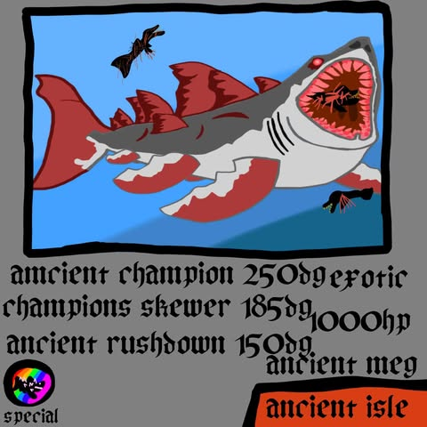

:
: FishCards
Home
Ancient Megalodon

The Ancient Megalodon is an Exotic fish that can be caught near Ancient Isle during
a Megalodon Hunt. It has a 10% chance to spawn when this happens. When catching, an -80%
progress speed decrease is inflicted on the player. This is considered one of the most OP
Fish in the game.
Attacks
Ancient Champion
This attack deals a whopping 250 damage!
Champion's Skewer
This attack deals 185 damage.
Ancient Rushdown
This attack deals 150 damage.